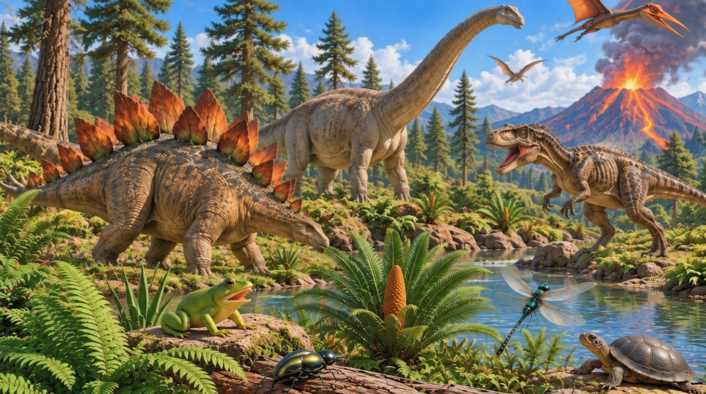
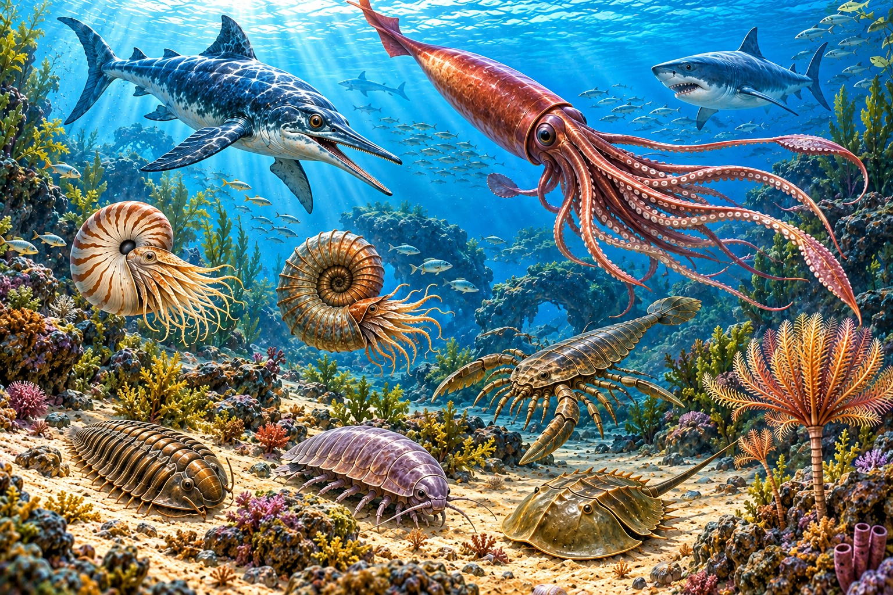

⌂
英語點讀百科
｜第三冊
Junior English Encyclopedia · Prehistoric Worlds
第三冊 · 已開放 2 個主題
跟著
波哥大
，一起探索史前世界！
先從侏羅紀世界和遠古海洋生物開始。
每個單元 10 個單字，點黃色編號就能聽發音、看例句。
Hi!
I'm 波哥大!

21
侏羅紀世界
Jurassic World
10 個單字 · 例句 · 聽音找圖
›

22
遠古海洋生物
Ancient Ocean Wonders
10 個單字 · 例句 · 聽音找圖
›
📚 返回書架